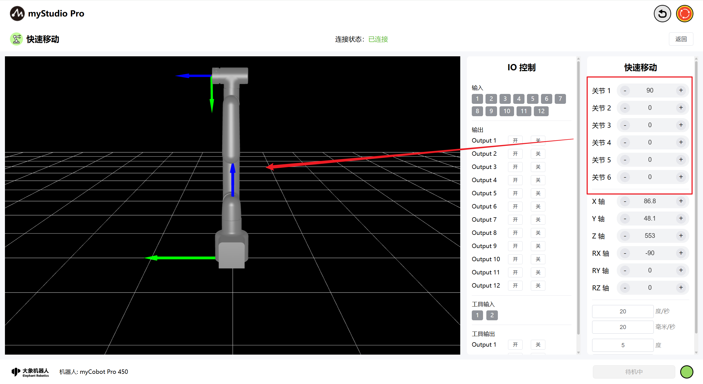
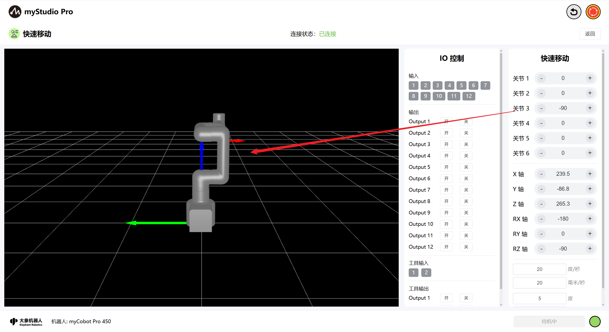
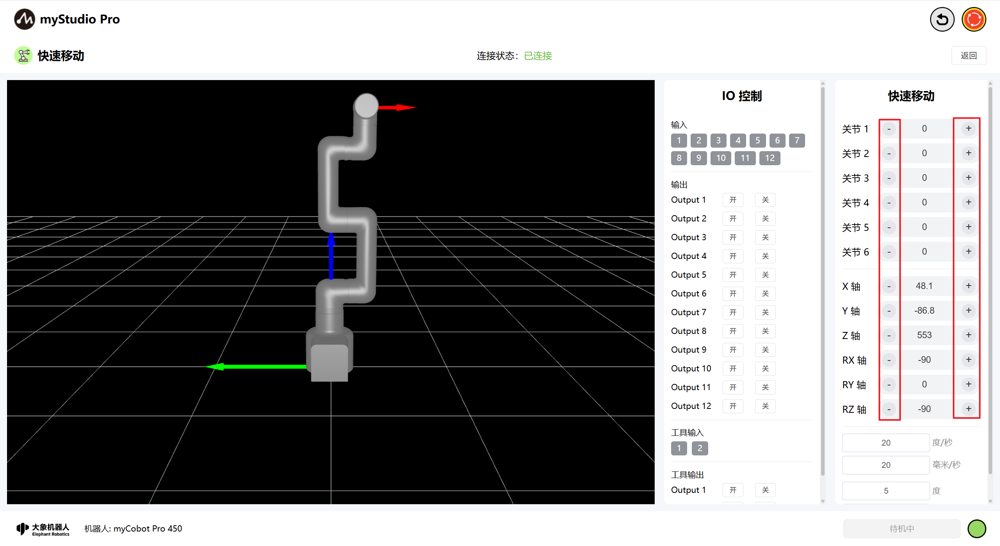
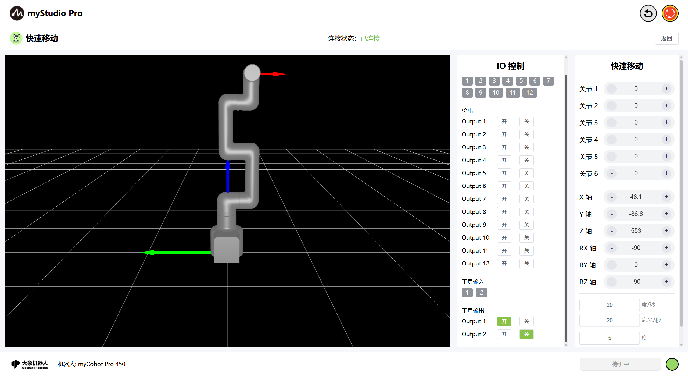

快速移动
开始之前
1、确保机器已上电
2、确保机器连接正常、通信正常
3、确保机器处于零位状态
4、机器服务端已开启
1 界面介绍

| 序号 | 说明 |
|---|---|
| 1 | myCobot Pro 450 3D仿真模型（坐标系红色箭头：X，绿色箭头：Y，蓝色箭头：Z） |
| 2 | 底部IO引脚号1-12，输入，属于安全模块检测项 |
| 3 | 底部IO引脚号1-12，输出，可以点击开关按钮进行设置输出 |
| 4 | 末端IO引脚号1、2，输入 |
| 5 | 末端IO引脚号1、2，输出，可用于控制F100力控夹爪 |
| 6 | 退出快速移动界面 |
| 7 | 角度控制，通过点击 + - 按钮，对机械臂进行关节角度控制，数值代表当前机械臂的关节角度信息，也可以直接修改数值进行关节控制 |
| 8 | 坐标控制，通过点击 + -按钮，对机械臂进行坐标控制，数值代表当前机械臂的坐标姿态信息，也可以直接修改数值进行坐标控制 |
| 9 | 设置机械臂关节的运动速度，默认 20 度/秒 |
| 10 | 设置机械臂坐标的运动速度，默认 20 毫米/秒 |
| 11 | 角度步长，调整角度时每次增加或减小的角度值 |
| 12 | 坐标步长，调整坐标姿态时每次增加或减小的坐标值 |
2 角度控制
在角度控制区域中，通过点击+ -按钮，对机械臂进行关节角度控制，数值代表当前机械臂的关节角度信息，也可以直接修改数值进行关节控制，输入限位范围内的位置，然后点击Enter，即可进行控制。

3 坐标控制
在使用坐标控制之前，需要将 关节3 移动到-90左右的角度位置。

在坐标控制区域中，通过点击 + - 按钮，对机械臂进行坐标控制，数值代表当前机械臂的坐标姿态信息，也可以直接修改数值进行坐标控制，输入限位范围内的位置，然后点击Enter，即可进行控制。

4 持续移动
以通过长按 对应区域的+ - 按钮，可以控制机器人按照指定的角度/坐标进行持续移动。

注意： + - 按钮每次长按 3 秒后，需要松开按钮，重新长按，再继续操作持续移动。
注意：控制坐标时需要先将机械臂运动至坐标控制姿态。
5 IO 控制
5.1 底部IO
设置底部IO引脚号 1-12 输出，用户可以自定义控制执行器。例如可以自定义控制夹爪、吸泵。

点击 开 关 按钮进行设置。
5.2 末端IO
设置末端IO引脚号 1-2 输出，可以控制F100力控夹爪。

通过点击 关 开 按钮，打开F100力控夹爪。

通过点击 开 关 按钮，关闭F100力控夹爪。
